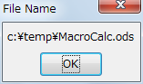
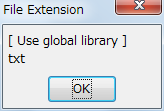
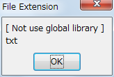
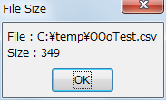
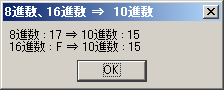

(因みに「マクロの一歩」で記す文法はMS-OfficeのVBAとほぼ同じです。OpenOffice.org Basic初心者は必見です。)
・File
[ File操作 ]
[ Path ]
[ Attribution ]
{{ 取得・確認 }}
<< 設定 >>
・Directory
[ Directory操作 ]
[ Directory情報 ]
･Data
[ Data Type ]
[ Date ]
[ Time ]
[ Number ]
[ String ]
[ Array ]
[ Variables ][ TypeName / VarType / TypeLen ]
Argument
Other
Tips on Macro
[ X-RAy / MRI ]
･ File
[ File操作 ]
Sub oFileExistsSFA
Dim oSimpleFileAccess
Dim oFromFile
Dim oToFile
Set oSimpleFileAccess = createUnoService("com.sun.star.ucb.SimpleFileAccess")
oFromFile = "C:\temp\test.csv"
oToFile = "c:\temp\test_copy1.csv"
If oSimpleFileAccess.exists(oFromFile) then
MsgBox( oFromFile & " は存在します", 0, "File Exist")
else
MsgBox( oFromFile & " は存在しません", 0, "Caution !!")
End If
End Sub
Sub oFileExists
Dim oFromFile
Dim oFromURL
oFromFile = "C:\temp\test.csv"
oFromURL = ConvertToUrl(oFromFile)
If FileExists(oFromURL) then
MsgBox( oFromFile & " は存在します", 0, "File Exist")
else
MsgBox( oFromFile & " は存在しません", 0, "Caution !!")
End If
End Sub
Sub oFilekillSFA
Dim oSimpleFileAccess
Dim oToFile
Dim oToURL
oSimpleFileAccess = createUnoService("com.sun.star.ucb.SimpleFileAccess")
oToFile = "c:\temp\test_kill1.csv"
oToURL = ConvertToUrl(oToFile)
If oSimpleFileAccess.exists(oToURL) then
oAns = msgbox( oToFile & "を本当に削除しますか?", 4, "Confirm to delete file")
If oAns = 6 then
oSimpleFileAccess.kill(oToURL)
End If
else
MsgBox( oToFile & " は存在しません", 0, "Caution !!")
End if
End Sub
Sub oRemoveFile
Dim oRmFile
oRmFile = "c:\Temp\RmFile1.odt"
oRmURL = ConvertToUrl(oRmFile)
If FileExists(oRmURL) then
Ans = MsgBox( oRmFile & "を削除しますか?", 4, "Confirm to Remove the File")
If Ans = 6 then
Kill(oRmURL)
MsgBox( oRmFile & "を削除しました")
End If
Else
MsgBox( oRmFile & "は存在しません。", 0, "Caution !!")
End If
End Sub
Sub oFileCopySFA
Dim oSimpleFileAccess
Dim oFromFile
Dim oToFile
oSimpleFileAccess = createUnoService("com.sun.star.ucb.SimpleFileAccess")
oFromFile = "C:\temp\test.csv"
oToFile = "c:\temp\test_copy.csv"
If oSimpleFileAccess.Exists(oFromFile) then
If NOT oSimpleFileAccess.Exists(oToFile) then
oSimpleFileAccess.copy(oFromFile, oToFile)
else
MsgBox(oToFile & " は既に存在します。", 0, "Caution !!")
Exit Sub
End If
else
MsgBox( oFromFile & " は存在しません", 0, "Caution !!")
Exit Sub
End If
End Sub
Sub oFileCopy
Dim oFromFile
Dim oToFile
Dim oFromURL
Dim oToURL
oFromFile = "C:\temp\test.csv"
oToFile = "c:\temp\test_copy.csv"
oFromURL = ConvertToUrl(oFromFile)
oToURL = ConvertToUrl(oToFile)
If FileExists(oFromURL) then
If NOT FileExists(oToURL) then
FileCopy( oFromURL, oToURL )
else
MsgBox(oToFile & " は既に存在します。", 0, "Caution !!")
Exit Sub
End If
else
MsgBox( oFromFile & " は存在しません", 0, "Caution !!")
Exit Sub
End If
End Sub
Sub oFileRenameSFA
Dim oSimpleFileAccess
Dim oFromFile
Dim oToFile
oSimpleFileAccess = createUnoService("com.sun.star.ucb.SimpleFileAccess")
oFromFile = "C:\temp\test_rename.csv"
oToFile = "c:\temp\test_rename1.csv"
If oSimpleFileAccess.Exists(oFromFile) then
If NOT oSimpleFileAccess.Exists(oToFile) then
oSimpleFileAccess.move(oFromFile, oToFile)
else
MsgBox(oToFile & " は既に存在します。", 0, "Caution !!")
Exit Sub
End If
else
MsgBox( oFromFile & " は存在しません", 0, "Caution !!")
Exit Sub
End If
End Sub
Sub oFileRename
Dim oFromFile
Dim oToFile
Dim oFromURL
Dim oToURL
oFromFile = "C:\temp\test_move.csv"
oToFile = "c:\temp\test_rename.csv"
oFromURL = ConvertToUrl(oFromFile)
oToURL = ConvertToUrl(oToFile)
If FileExists(oFromURL) then
If NOT FileExists(oToURL) then
Name oFromURL As oToURL
else
MsgBox(oToFile & " は既に存在します。", 0, "Caution !!")
Exit Sub
End If
else
MsgBox( oFromFile & " は存在しません", 0, "Caution !!")
Exit Sub
End If
End Sub
Sub oMoveFileSFA
Dim oSimpleFileAccess
Dim oFromFile
Dim oToFile
oSimpleFileAccess = createUnoService("com.sun.star.ucb.SimpleFileAccess")
oFromFile = "C:\temp\test.csv"
oToFile = "c:\temp\test_move.csv"
If oSimpleFileAccess.Exists(oFromFile) then
If NOT oSimpleFileAccess.Exists(oToFile) then
oSimpleFileAccess.move(oFromFile, oToFile)
else
MsgBox(oToFile & " は既に存在します。", 0, "Caution !!")
Exit Sub
End If
else
MsgBox( oFromFile & " は存在しません", 0, "Caution !!")
Exit Sub
End If
End Sub
Sub FileShortCut
Dim oFolder as String
Dim oWShell as Object
Dim oLink as Object
oFolder = "c:\temp\"
oWShell = CreateObject("WScript.Shell")
oLink = oWShell.CreateShortcut(oFolder & "\dummy.lnk")
oLink.TargetPath = "c:\temp\Dummy.txt"
oLink.WorkingDirectory = oFolder
oLink.Save
msgbox "Success"
End Sub
[ Path ]
Sub oMiscellaneous()
Dim oPath_Ini as String
Dim oDisp as String
Dim oIni as Integer
Dim oe as Integer
Dim i as Integer
Dim oPosStart as Integer
Dim oPosEnd as Integer
oPath_Ini = Environ("PATH")
oDisp = "[ Path ]" & Chr$(10)
oIni = 1
oe = 1
i = 0
Do While(oe > 0 and i <=100)
oPosStart = InStr(oIni, oPath_Ini, ";")
oPosEnd = InStr(oPosStart+1, oPath_Ini, ";")
oe = (oPosEnd-1) - (oPosStart+1)
oDisp = oDisp & mid(oPath_Ini, oPosStart+1, oe) & Chr$(10)
oIni = oPosEnd + 1
i = i + 1
Loop
MsgBox(oDisp, 0, "Environ(""Path"")")
End Sub
Sub FileDirPath()
Dim oFile as String, oURL as String
Dim oPathDir as String
GlobalScope.BasicLibraries.LoadLibrary("Tools")
oFile = "c:\temp\oTextMacro.txt"
oURL = ConvertToUrl(oFile)
oPathDir = Directorynameoutofpath(oURL, "/")
oDisp = "[ Use global library ]" & Chr$(10) & ConvertFromUrl(oPathDir)
msgbox( oDisp, 0, "Path")
End Sub
Sub FileDirPath()
Dim oFile as String, oURL as String
Dim oPathDir as String
oFile = "c:\temp\oTextMacro.txt"
oURL = ConvertToUrl(oFile)
oPathDir = Directorynameoutofpath(oURL, "/")
oDisp = "[ Not use global library ]" & Chr$(10) & ConvertFromUrl(oPathDir)
msgbox( oDisp, 0, "Path")
End Sub
'
'
' [ 共通Function ]
Function ArrayoutofString( oBigString as String, oSeparator as String, Optional oMaxIndex as Integer )
Dim oLocList() as String
oLocList = split( oBigString, oSeparator )
If NOT IsMissing(oMaxIndex) then
oMaxIndex = UBound(oLocList)
End If
ArrayoutofString = oLocList
End Function
'
Function FileNameoutofPath( ByVal oPath as String, Optional oSeparator as String ) as String
Dim i as Integer
Dim oSepList() as String
If IsMissing(oSeparator) then
oPath = ConvertFromUrl(oPath)
oSeparator = GetPathSeparator()
End If
oSepList() = ArrayoutofString( oPath, oSeparator, i )
FileNameoutofPath = oSepList(i)
End Function
'
Function DirectoryNameoutofPath( oPath as String, oSeparator as String ) as String
Dim oLocFileName as String
oLocFileName = FileNameoutofPath( oPath, oSeparator )
DirectoryNameoutofPath = RTrimStr( oPath, oSeparator & oLocFileName )
End Function
'
Function RTrimStr(ByVal oPath, oFindStr as String) as String
Dim oSmallLen as Integer
Dim oBigLen as Integer
oSmallLen = Len(oFindStr)
oBigLen = Len(oPath)
If Instr(1,oPath, oFindStr) <> 0 Then
If Mid(oPath, oBigLen + 1 - oSmallLen, oSmallLen) = oFindStr Then
RTrimStr = Mid(oPath,1, oBigLen - oSmallLen)
Else
RTrimStr = oPath
End If
Else
RTrimStr = oPath
End If
End Function
[ Attribution ]
{{ 取得・確認 }}

Sub oGetURL()
Dim oDoc as Object
Dim oWName as String, oFileURL as String
Dim oNUrl as String, oName as String
Dim oDummy()
oWName = "c:\temp\MacroCalc.ods"
oFileURL = ConvertToUrl(oWName)
oDoc = StarDesktop.loadComponentFromURL(oFileURL, "_blank", 0, oDummy())
oNUrl = oDoc.getURL()
oName = ConvertFromUrl(oNUrl)
'
' Safty Close
If HasUnoInterfaces(oDoc,"com.sun.star.util.XCloseable") then
oDoc.close(true)
else
msgbox("Fileを閉じれません", 0, "Caution")
Exit Sub
End If
msgbox(oName, 0, "File Name")
End Sub
'
' [ Note ]
' File Nameの取得は 「 2.OpenOffice.org File 」→「 OOo Document 」→「 [ Property ] 」→「 URL 」,「 Title 」にもSample有り
Sub oFileOpenDialog
Dim oFP as Object
Dim oAccept As Integer
Dim oGetAFileName as String, oFileName as String
Dim oDisp as String
oFP = CreateUnoService("com.sun.star.ui.dialogs.FilePicker")
oAccept = oFP.Execute()
If oAccept = 1 then 'Canncelの場合 iAccept <> 1
oGetAFileName = oFP.Files(0)
oFileName = ConvertFromUrl(oGetAFileName)
End If
oDisp = "選択したfile名は" & Chr$(10) & "「 " & oFileName & " 」" & Chr$(10) & "ですね。"
Msgbox(oDisp, 0, "FilePicker")
End Sub
Sub oGetAttributes
Dim oFile as String
Dim oFileURL as String
Dim oFileAttr as String
Dim oDisp as String
oFile = "C:\temp\test\"
oFileURL = ConvertToUrl(oFile)
If FileExists(oFileURL) then
oFileAttr = GetAttr(oFileURL)
Select Case oFileAttr
case =0
oAttributes = "Normal"
case =16
oAttributes = "Directory( Folder )"
case =1
oAttributes = "Read-Only"
case =2
oAttributes = "Hidden"
case =4
oAttributes = "System"
case =8
oAttributes = "Volume"
case =32
oAttributes = "Archive"
End Select
oDisp = "File Name : " & oFile & Chr$(10) & "Attributes : " & oAttributes
MsgBox(oDisp , 0, "Attribution")
else
MsgBox( oFile & " は存在しません", 0, "Caution !!")
End if
End Sub
Sub oFileIsReadOnlySFA()
Dim oSimpleFileAccess as Object
Dim oFromFile as String
oSimpleFileAccess = createUnoService("com.sun.star.ucb.SimpleFileAccess")
oFromFile = "C:\temp\OOo_Macro.pdf"
If oSimpleFileAccess.Exists(oFromFile) then
If oSimpleFileAccess.IsReadOnly(oFromFile) then
MsgBox(oFromFile & " は" & Chr$(10) & "「 Readonly File」です", 0, "Check ReadOnly")
else
MsgBox(oFromFile & " は" & Chr$(10) & "「 Readonly File」ではありません", 0, "Check ReadOnly")
End If
else
MsgBox( oFromFile & " は存在しません", 0, "Caution !!")
Exit Sub
End If
End Sub
Sub oFileIsHiddenSFA()
Dim oSimpleFileAccess as Object
Dim oFile as String
oSimpleFileAccess = createUnoService("com.sun.star.ucb.SimpleFileAccess")
oFile = "C:\temp\OOo_Macro.pdf"
If oSimpleFileAccess.Exists(oFile) then
If oSimpleFileAccess.IsHidden(oFile) then
MsgBox(oFile & " は" & Chr$(10) & "「 Hidden File」です", 0, "Check Hidden")
else
MsgBox(oFile & " は" & Chr$(10) & "「 Hidden File」ではありません", 0, "Check Hidden")
End If
else
MsgBox( oFile & " は存在しません", 0, "Caution !!")
Exit Sub
End If
End Sub

Sub FileExtention()
Dim oFile as String
Dim oFileExt as String
GlobalScope.BasicLibraries.LoadLibrary("Tools")
oFile = "c:\temp\oTextMacro.txt"
oFileExt = GetFileNameExtension(oFile)
oDisp = "[ Use global library ]" & Chr$(10) & oFileExt
msgbox( oDisp, 0, "File Extension")
End Sub

Sub FileExtention()
Dim oFile as String
Dim oFileExt as String
oFile = "c:\temp\oTextMacro.txt"
oFileExt = GetFileNameExtension(oFile)
oDisp = "[ Not use global library ]" & Chr$(10) & oFileExt
msgbox( oDisp, 0, "File Extension")
End Sub
'
'
' [ 共通Function ]
Function ArrayoutofString( oBigString as String, oSeparator as String, Optional oMaxIndex as Integer )
Dim oLocList() as String
oLocList = split( oBigString, oSeparator )
If NOT IsMissing(oMaxIndex) then
oMaxIndex = UBound(oLocList)
End If
ArrayoutofString = oLocList
End Function
'
'
Function GetFileNameExtension(ByVal FileName as String)
Dim oMaxIndex as Integer
Dim oSepList() as String
oSepList() = ArrayoutofString(FileName, ".", oMaxIndex)
GetFileNameExtension = oSepList(oMaxIndex)
End Function
Sub FileNameLessExtension()
Dim oFile as String, oURL as String
Dim oNameWithoutExt as String
Dim oDisp as String
GlobalScope.BasicLibraries.LoadLibrary("Tools")
oFile = "c:\temp\oTextMacro.txt"
oURL = ConvertToUrl(oFile)
oNameWithoutExt = GetFileNameWithoutExtension(oURL, "/")
oDisp = "[ Use global library ]" & Chr$(10) & "Without Extension" & Chr$(10) & "⇒ " & ConvertFromUrl(oNameWithoutExt)
msgbox( oDisp, 0, "FileName")
End Sub
Sub FileNameLessExtension()
Dim oFile as String, oURL as String
Dim oNameWithoutExt as String
oFile = "c:\temp\oTextMacro.txt"
oURL = ConvertToUrl(oFile)
oNameWithoutExt = GetFileNameWithoutExtension(oURL, "/")
oDisp = "[ Not use global library ]" & Chr$(10) & "Without Extension" & Chr$(10) & "⇒ " & oNameWithoutExt
msgbox( oDisp, 0, "FileName")
End Sub
'
'
' [ 共通Function ]
Function ArrayoutofString( oBigString as String, oSeparator as String, Optional oMaxIndex as Integer )
Dim oLocList() as String
oLocList = split( oBigString, oSeparator )
If NOT IsMissing(oMaxIndex) then
oMaxIndex = UBound(oLocList)
End If
ArrayoutofString = oLocList
End Function
'
Function FileNameoutofPath( ByVal oPath as String, Optional oSeparator as String ) as String
Dim i as Integer
Dim oSepList() as String
If IsMissing(oSeparator) then
oPath = ConvertFromUrl(oPath)
oSeparator = GetPathSeparator()
End If
oSepList() = ArrayoutofString( oPath, oSeparator, i )
FileNameoutofPath = oSepList(i)
End Function
'
Function GetFileNameWithoutExtension( ByVal FileName as String, Optional oSeparator as String ) as String
Dim oMaxIndex as Integer
Dim oSepList() as String
If NOT IsMissing(oSeparator) then
FileName = FileNameoutofPath(FileName, oSeparator)
End If
oSepList() = ArrayoutofString(FileName, ".", oMaxIndex)
GetFileNameWithoutExtension = RTrimStr( FileName, "." & oSepList(oMaxIndex) )
End Function
'
Function RTrimStr(ByVal oPath, oFindStr as String) as String
Dim oSmallLen as Integer
Dim oBigLen as Integer
oSmallLen = Len(oFindStr)
oBigLen = Len(oPath)
If Instr(1,oPath, oFindStr) <> 0 Then
If Mid(oPath, oBigLen + 1 - oSmallLen, oSmallLen) = oFindStr Then
RTrimStr = Mid(oPath,1, oBigLen - oSmallLen)
Else
RTrimStr = oPath
End If
Else
RTrimStr = oPath
End If
End Function

Sub oFileSizeSFA
Dim oSimpleFileAccess as Object
Dim oFile as String
Dim oFSize as Long
Dim oDisp as String
oSimpleFileAccess = createUnoService("com.sun.star.ucb.SimpleFileAccess")
oFile = "C:\temp\OOoTest.csv"
If oSimpleFileAccess.Exists(oFile) then
oFSize = oSimpleFileAccess.getSize(oFile)
oDisp = "File : " & oFile & Chr$(10) & "Size : " & oFSize
MsgBox(oDisp, 0, "File Size")
else
MsgBox( oFile & " は存在しません", 0, "Caution !!")
Exit Sub
End If
End Sub
Sub oFileLength
Dim oFile as String, oFileURL as String
Dim oFileLen as Long
Dim oDisp as String
oFile = "C:\temp\OOoTest.csv"
oFileURL = ConvertToUrl(oFile)
oFileLen = FileLen(oFileURL)
oDisp = "File Name : " & oFile & Chr$(10) & "File Length : " & oFileLen & " bytes"
MsgBox(oDisp & "bytes", 0, "File Length( File Size )")
End Sub
Sub oGetContentTypeSFA()
Dim oSimpleFileAccess as Object
Dim oFile as String
Dim oCtype as String
oSimpleFileAccess = createUnoService("com.sun.star.ucb.SimpleFileAccess")
oFile = "C:\temp\MacroCalc.ods"
If oSimpleFileAccess.Exists(oFile) then
oCType = oSimpleFileAccess.getContentType(oFile)
MsgBox(oCType , 0, "File : Content Type")
else
MsgBox( oFile & " は存在しません", 0, "Caution !!")
Exit Sub
End If
End Sub
Sub oDateTimeModifiiedSFA
Dim oSimpleFileAccess as Object
Dim oFile as String
Dim oDataTimeModified as Object
Dim oDate as String
Dim oYear as Integer, oMonth as Integer, oDay as Integer
Dim oTime as String
Dim oHour as Integer, oMinute as Integer, oSecond as Integer
oSimpleFileAccess = createUnoService("com.sun.star.ucb.SimpleFileAccess")
oFile = "C:\temp\OOo_Macro.pdf"
If oSimpleFileAccess.Exists(oFile) then
oDataTimeModified = oSimpleFileAccess.getDateTimeModified(oFile)
oYear = oDataTimeModified.year
oMonth = oDataTimeModified.month
oDay = oDataTimeModified.day
oDate = oYear & "/" & oMonth & "/" & oDay
oHour = oDataTimeModified.hours
oMinute = oDataTimeModified.minutes
oSecond = oDataTimeModified.seconds
oTime = oHour & "時" & oMinute & "分" & oSecond & "秒"
MsgBox(oDate & Chr$(10) & oTime, 0, "Date&Time of File Modified")
else
MsgBox( oFile & " は存在しません", 0, "Caution !!")
Exit Sub
End If
End Sub
Sub oFileDateTime()
Dim oFile as String, oFileURL as String
Dim oDateStr as String
Dim oDataTime as Date
Dim oDisp as String
oFile = "C:\temp\OOo_Macro.pdf"
oFileURL = ConvertToUrl(oFile)
If FileExists(oFileURL) then
oDateStr = FileDateTime(oFileURL)
oDateTime = CDate(CSng(oDateStr))
oDisp = "File Name : " & oFile & Chr$(10) & "[ 更新日時 ]" & Chr$(10)
MsgBox(oDisp & oDateTime, 0, "FileDateTime")
else
MsgBox( oFile & " は存在しません", 0, "Caution !!")
Exit Sub
End If
End Sub
'
' [ Note ]
' OOo では FileDateTime だけで日時がStringのReturnが得られたが LibreOfficeではSirial 値がStringでReturnされる
Sub oGetTypesSFA()
Dim oSimpleFileAccess as Object
Dim oFile as String
Dim oTypes(100) as Object
Dim oDisp as String
oSimpleFileAccess = createUnoService("com.sun.star.ucb.SimpleFileAccess")
oFile = "C:\temp\OOo_Macro.pdf"
If oSimpleFileAccess.Exists(oFile) then
oTypes = oSimpleFileAccess.getTypes(oFile)
oDisp = "File Name : " & oFile & Chr$(10)
oDisp = oDisp & "[ getTypes ]" & Chr$(10)
for i = 0 to UBound(oTypes)
oDisp = oDisp & i & ") " & oTypes(i).Name & Chr$(10)
next i
MsgBox(oDisp , 0, "Type名")
else
MsgBox( oFile & " は存在しません", 0, "Caution !!")
Exit Sub
End If
End Sub
Sub oGetImplementationIDSFA()
Dim oSimpleFileAccess as Object
Dim oFile as String
Dim oID(100) as Integer
Dim oDisp as String
oSimpleFileAccess = createUnoService("com.sun.star.ucb.SimpleFileAccess")
oFile = "C:\temp\OOo_Macro.pdf"
If oSimpleFileAccess.Exists(oFile) then
oID = oSimpleFileAccess.getImplementationID(oFile)
oDisp = "File Name : " & oFile & Chr$(10)
oDisp = oDisp & "[ getImplementationID ]" & Chr$(10)
for i = 0 to UBound(oID)
oDisp = oDisp & i & ") " & oID(i) & Chr$(10)
next i
MsgBox(oDisp , 0, "ImplementationID No.")
else
MsgBox( oFile & " は存在しません", 0, "Caution !!")
Exit Sub
End If
End Sub
Sub FileListinDirectorySFA
Dim oSimpleFileAccess
Dim oDir
Dim oFileList
Dim oDisp
Dim oFileName
oDir = "C:\temp\"
oSimpleFileAccess = createUnoService("com.sun.star.ucb.SimpleFileAccess")
If oSimpleFileAccess.Exists(oDir) then
oFileList = oSimpleFileAccess.getFolderContents(oDir, 0) ' 0 : Not to be Included SubDirectory Name, 1: Included SubDirectory Name
oDisp = "Directory Name : " & oDir & Chr$(10)
oDisp = oDisp & "[ File List ]" & Chr$(10)
for i = 0 to UBound(oFileList)
oFileName = ConvertFromURL(oFileList(i))
oDisp = oDisp & i & ") " & oFileName & Chr$(10)
next i
MsgBox(oDisp , 0, " File List")
else
MsgBox( oDir & " は存在しません", 0, "Caution !!")
Exit Sub
End If
End Sub
Sub FileListinDirectory
Dim oDir
Dim oDirURL
Dim oFileList
Dim oFileNameList
Dim oDisp
oDir = "C:\temp\"
oDirURL = ConvertToUrl(oDir)
If FileExists(oDirURL) then
oFileList = Dir(oDirURL, 0)
i=0
Do While (oFileList <> "" and i <=100)
i = i+1
oFileNameList = oFileNameList & i & ") " & oFileList & Chr$(10)
oFileList = Dir()
Loop
oDisp = " Directory Name : " & oDir & Chr$(10)
MsgBox(oDisp & oFileNameList, 0, "File List")
else
MsgBox( oDir & " は存在しません", 0, "Caution !!")
End If
End Sub
<< 設定 >>
Sub oSetDispayDirectory
Dim oFA
Dim oFP
Dim oName, oURL, oText As String
oName ="C:\Temp\Witer_Macro.odt"
oURL = ConvertToUrl(oName)
oFA = CreateUnoService("com.sun.star.ucb.SimpleFileAccess")
oFP = CreateUnoService("com.sun.star.ui.dialogs.FilePicker")
If oFA.Exists(oURL) then
oFP.setDisplayDirectory(oURL)
Else
Print " Don't Exist" + oName
End If
End Sub
Sub oFileSetReadOnlySFA
Dim oSimpleFileAccess
Dim oFile
oSimpleFileAccess = createUnoService("com.sun.star.ucb.SimpleFileAccess")
oFile = "C:\temp\test.csv"
If oSimpleFileAccess.Exists(oFile) and NOT oSimpleFileAccess.isReadOnly(oFile) then
oSimpleFileAccess.setReadOnly(oFile, true)
If oSimpleFileAccess.isReadOnly(oFile) then
MsgBox(oFile & " は「 Readonly File」に変更されました。", 0, "Set ReadOnly")
End If
else
MsgBox( oFile & " は存在しないか、既に「ReadOnly File」です", 0, "Caution !!")
Exit Sub
End If
End Sub
Sub oFileReadOnly
Dim oFileURL
Dim oFile2
oFile2 = "C:\temp\test.csv"
oFileURL = ConvertToUrl(oFile2)
If FileExists(oFileURL) then
SetAttr(oFileURL,1)
MsgBox(oFile2 & " は「 Readonly File」に変更されました。", 0, "SetAttr(,1)")
else
MsgBox( oFile2 & " は存在しません", 0, "Caution !!")
End if
End Sub
Sub oFileSetHiddenSFA
Dim oSimpleFileAccess
Dim oFile
oSimpleFileAccess = createUnoService("com.sun.star.ucb.SimpleFileAccess")
oFile = "C:\temp\test.csv"
If oSimpleFileAccess.Exists(oFile) and NOT oSimpleFileAccess.isHidden(oFile) then
oSimpleFileAccess.setHidden(oFile, true)
If oSimpleFileAccess.isHidden(oFile) then
MsgBox(oFile & " は「 Hidden File」に変更されました。", 0, "Set Hidden")
End If
else
MsgBox( oFile & " は存在しないか、既に「Hidden File」です", 0, "Caution !!")
Exit Sub
End If
End Sub
Sub oFileHidden
Dim oFileURL
Dim oFile
oFile = "C:\temp\test.csv"
oFileURL = ConvertToUrl(oFile)
If FileExists(oFileURL) then
SetAttr(oFileURL,2)
MsgBox(oFile & " は「 Hidden File」に変更されました。", 0, "SetAttr(,1)")
else
MsgBox( oFile & " は存在しません", 0, "Caution !!")
End if
End Sub
･Directory
[ Directory操作 ]
Sub oDirCreateSFA
Dim oSimpleFileAccess
Dim oDir
oSimpleFileAccess = createUnoService("com.sun.star.ucb.SimpleFileAccess")
oDir = "C:\temp\temp\"
If NOT oSimpleFileAccess.Exists(oDir) then
oSimpleFileAccess.createFolder(oDir)
else
MsgBox(oDir & " は既に存在します。", 0, "Caution !!")
Exit Sub
End If
End Sub
Sub oDirCreate
Dim oDir
Dim oDirURL
oDir = "C:\temp\temp1"
oDirURL = ConvertToUrl(oDir)
If NOT FileExists(oDirURL) then
MkDir(oDirURL)
else
MsgBox( oDir & " は既に存在します", 0, "Caution !!")
End If
End Sub
Sub oDirIsFolderSFA
Dim oSimpleFileAccess
Dim oDir
oSimpleFileAccess = createUnoService("com.sun.star.ucb.SimpleFileAccess")
oDir = "C:\temp\temp\"
If oSimpleFileAccess.Exists(oDir) then
If oSimpleFileAccess.isFolder(oDir) then
Msgbox(oDir & " はDirectory(Folder)です", 0,"Directory( Folder )確認")
else
Msgbox(oDir & " はDirectory(Folder)です", 0,"Directory( Folder )確認")
End If
else
MsgBox(oDir & " は存在しません", 0, "Caution !!")
Exit Sub
End If
End Sub
Sub oRemoveDir
Dim oDir
Dim oDirURL
oDir = "C:\temp\temp1\"
oDirURL = ConvertToUrl(oDir)
If FileExists(oDirURL) then
oAns = MsgBox(oDir & " を本当に削除しますか?", 4,"Confirm to Remove Directory")
If oAns = 6 then
RmDir(oDir)
End If
else
MsgBox( oDir & " は存在しません", 0, "Caution !!")
End If
End Sub
Sub oDirCopySFA
Dim oSimpleFileAccess
Dim oFromDir
Dim oToDir
oSimpleFileAccess = createUnoService("com.sun.star.ucb.SimpleFileAccess")
oFromDir = "C:\temp\temp\"
oToDir = "c:\temp\temp1\"
If oSimpleFileAccess.Exists(oFromDir) then
If NOT oSimpleFileAccess.Exists(oToDir) then
oSimpleFileAccess.copy(oFromDir, oToDir)
else
MsgBox(oToDir & " は既に存在します。", 0, "Caution !!")
Exit Sub
End If
else
MsgBox( oFromDir & " は存在しません", 0, "Caution !!")
Exit Sub
End If
End Sub
Sub oDirCopy
Dim oSimpleFileAccess
Dim oFromDir
Dim oToDir
oSimpleFileAccess = createUnoService("com.sun.star.ucb.SimpleFileAccess")
oFromDir = "C:\temp\temp1"
oToDir = "c:\temp\temp"
If FileExists(oFromDir) then
If NOT FileExists(oToDir) then
FileCopy(oFromDir, oToDir) 'Directory Copy
else
MsgBox(oToDir & " は既に存在します。", 0, "Caution !!")
Exit Sub
End If
else
MsgBox( oFromDir & " は存在しません", 0, "Caution !!")
Exit Sub
End If
End Sub
Sub oDirMoveSFA
Dim oSimpleFileAccess
Dim oFromDir
Dim oToDir
oSimpleFileAccess = createUnoService("com.sun.star.ucb.SimpleFileAccess")
oFromDir = "C:\temp\temp\"
oToDir = "c:\temp\temp2\"
If oSimpleFileAccess.Exists(oFromDir) then
If NOT oSimpleFileAccess.Exists(oToDir) then
oSimpleFileAccess.move(oFromDir, oToDir)
else
MsgBox(oToDir & " は既に存在します。", 0, "Caution !!")
Exit Sub
End If
else
MsgBox( oFromDir & " は存在しません", 0, "Caution !!")
Exit Sub
End If
End Sub
Sub oDirReNameSFA
Dim oSimpleFileAccess
Dim oFromDir
Dim oToDir
oSimpleFileAccess = createUnoService("com.sun.star.ucb.SimpleFileAccess")
oFromDir = "C:\temp\temp2\"
oToDir = "c:\temp\temp\"
If oSimpleFileAccess.Exists(oFromDir) then
If NOT oSimpleFileAccess.Exists(oToDir) then
oSimpleFileAccess.move(oFromDir, oToDir)
else
MsgBox(oToDir & " は既に存在します。", 0, "Caution !!")
Exit Sub
End If
else
MsgBox( oFromDir & " は存在しません", 0, "Caution !!")
Exit Sub
End If
End Sub
Sub oDirRename
Dim oFromDir
Dim oToDir
Dim oFromURL
Dim oToURL
oFromDir = "c:\temp\temp\"
oToDir = "c:\temp\temp2\"
oFromURL = ConvertToUrl(oFromDir)
oToURL = ConvertToUrl(oToDir)
If FileExists(oFromURL) then
If NOT FileExists(oToURL) then
Name oFromURL As oToURL
else
MsgBox(oToDir & " は既に存在します。", 0, "Caution !!")
Exit Sub
End If
else
MsgBox( oFromDir & " は存在しません", 0, "Caution !!")
Exit Sub
End If
End Sub
[ Directory情報 ]
Sub oCurDirectory
Dim oCurDir
oCurDir = CurDir
MsgBox(oCurDir, 0, "Current Directory")
End Sub
Sub oChangeDir
Dim oFromDir
Dim oToDir
oFromDir = CurDir
oDirName = "c:\temp"
oDirURL = ConvertToUrl(oDirName)
ChDir(oDirURL)
oToDir = CurDir
MsgBox(oFromDir & Chr$(10) & oToDir, 0, "Current Directory")
End Sub
Sub oGetWorkDir
Dim oPathSettings
Dim GetWorkDir As String
oPathSettings = CreateUnoService("com.sun.star.util.PathSettings")
GetWorkDir = oPathSettings.Work
print GetWorkDir
End Sub
Sub GetWorkDir02()
Dim oUnoSrv as Object
Dim oWorkUrl As String, oWorkFolder As String, oDisp as String
oUnoSrv = CreateUnoService("com.sun.star.util.PathSubstitution")
oWorkUrl = oUnoSrv.substituteVariables("$(work)", True)
oWorkFolder = ConvertFromUrl(oWorkUrl)
oDisp = "Work Folder(2)" & Chr$(10) & Chr$(9) & "↓" & Chr$(10) & oWorkFolder
msgbox oDisp,0,"Work Folder(2)"
End Sub
'
' [ com.sun.star.util.PathSubstitution ]
' Discription : LibreOffice / Apache OpenOffice
Sub oDirectoryList
Dim oDir
Dim oDirURL
Dim oDirList
Dim oDirNameList
Dim oDisp
oDir = "C:\temp\"
oDirURL = ConvertToUrl(oDir)
If FileExists(oDirURL) then
oDirList = Dir(oDirURL, 16)
i=0
Do While (oDirList <> "" and i <=100)
i = i+1
oDirNameList = oDirNameList & i & ") " & oDirList & Chr$(10)
oDirList = Dir()
Loop
oDisp = " Directory Name : " & oDir & Chr$(10)
MsgBox(oDisp & oDirNameList, 0, "Directory List")
else
MsgBox( oDir & " は存在しません", 0, "Caution !!")
End If
End Sub
Sub ShowFolder
Dim NextFile As String
NextFile = Dir("C:\OOo_test\", 16)
While NextFile <> ""
if (NextFile <> "." or NextFile <> "..") then
NextFile = Dir :msgbox NextFile
End if
Wend
End Sub
Sub oGPS
oG = GetPathSeparator()
msgbox (oG, 0, "Path区切り記号")
End Sub
Sub oTemp
Dim oTmp
oTmp = Environ("TEMP")
MsgBox(oTmp, 0, "Temporary Directory")
End Sub
･Data
[ Data Type ]
Sub EachDataType()
Dim oYN as Boolean
' Currency
Dim oCur as Currency
Dim oCur2@
Dim oDate as Date
Dim oSgle as Single
' Double
Dim oDble as Double
Dim oDble2#
' Integer
Dim oInt as Integer
Dim oInt2%
' Long
Dim oLng as Long
Dim oLng2&
' String
Dim oDisp as String
Dim oDisp2$
Dim oObj as Object
Dim oVnt as Variant
oCur = CCur(1000.0)
oDate = Now()
oSgle = CSng(PI())
oDble = CDbl(PI())
oInt = CInt(PI())
oLng = CLng(PI())
oObj = ThisComponent
oVnt = 2000.0
oYN = IsUnoStruct(oObj)
oDisp = "Cuurent : " & Chr$(9) & oCur & Chr$(10) & _
"Date : " & Chr$(9) & oDate & Chr$(10) & _
"Single : " & Chr$(9) & oSgle & Chr$(10) & _
"Double : " & Chr$(9) & oDble & Chr$(10) & _
"Integer : " & Chr$(9) & oInt & Chr$(10) & _
"Long : " & Chr$(9) & oLng & Chr$(10) & _
"Boolean : " & Chr$(9) & oYN & Chr$(10) & _
"Variant : " & Chr$(9) & oVnt
msgbox oDisp,0,"Dataの型"
End Sub
[ Date ]
Sub oSeparatedDate
Dim oDate As New com.sun.star.util.Date
oDate_Ini = Date
oDate.Day = Day(oDate_Ini)
oDate.Month = Month(oDate_Ini)
oDate.Year = Year(oDate_Ini)
msgbox("[ 入力値 ： " & oDate_Ini & " ]" & Chr$(10) _
&"Year : " & oDate.Year &Chr$(10) _
&"Month : " & oDate.Month & Chr$(10) _
& "Day : " & oDate.Day & Chr$(10) _
& "oDate_Ini : Date? =" & IsDate(oDate_Ini) & " /// Object? =" & IsObject(oDate_Ini) & Chr$(10) _
& "oDate : Date? =" & IsDate(oDate) & " /// Object? =" & IsObject(oDate) _
, 0, "com.sun.star.util.Date")
End Sub
Sub oDateValue
oTime_Ini = now()
sdate =DateValue(oTime_Ini) '日付dataのみを抽出
Msgbox(oTime_Ini & " ⇒ " & sdate , 0, "日付Dataを抽出")
End Sub
Sub oWeekDay
Date_Ini = "2010/04/28"
sDate = WeekDay(Date_Ini)
Select Case sDate
Case =1
oDate = "Sunday"
Case =2
oDate = "Monday"
Case =3
oDate = "Tuesday"
Case =4
oDate = "Wednesday"
Case =5
oDate = "Thursday"
Case =6
oDate = "Friday"
Case =7
oDate = "Saturday"
End Select
MsgBox(oDate,0,"WeekDay")
End Sub
Sub oCDate
odini = 40297
oC = CDate(odini)
Msgbox(odini & " ⇒ " & oC, 0, "CDate")
End Sub
Sub oDateFormat
oy = Year(Date())
om =Month(Date())
od = Day(Date())
odate_ini = oy & "," & om & "," & od
od1 = IsDate(odata_ini)
ofdate = DateSerial(oy,om,od)
od2 = IsDate(ofdate)
msgbox( odate_ini & " Date形式 ： " & od1 & Chr$(10) _
& ofdate & " Date形式 ： " & od2, 0, "Date形式に変換")
End Sub
[ Time ]
Sub oSeparatedTime
Dim oTime As New com.sun.star.util.Time
oTime_Ini = Time
oNow_Ini = Now()
oTime.Hours = Hour(oNow_Ini)
oTime.Minutes = Minute(oNow_Ini)
oTime.Seconds = Second(oNow_Ini)
msgbox("[ 入力値 ： " & oNow_Ini & " ]" & Chr$(10) _
&"Hour : " & oTime.Hours &Chr$(10) _
&"Month : " & oTime.Minutes & Chr$(10) _
& "Second : " & oTime.Seconds & Chr$(10) _
& "Time : " & oTime_Ini & " Object? =" & IsObject(oTime_Ini) & Chr$(10) _
& "Now : " & oNow_Ini & " Object? =" & IsObject(oNow_Ini) & Chr$(10) _
& "oTime : Object? =" & IsObject(oTime) _
, 0, "com.sun.star.util.Time")
End Sub
Sub oTimer
Dim ot1 as Long
ot1 = Timer() 'unit : sec
oh = Int(ot1/(60*60))
om = Int((ot1-60*60*oh)/60)
os = ot1-((60*60)*oh+60*om)
Msgbox(oh & "時" & om & "分" & os & "秒", 0, "Timer()による時間取得")
End Sub
Sub oTimer2
'正午(12:00)にMessage表示
ot = 12*60*60
i=0
Do while(i <=1000)
If Timer()=ot then
Msgbox("正午です。",0,"Timer()")
else
oAns=Msgbox("続けますか?", 4,"確認")
If oAns <> 6 then
Exit Do
End if
End If
i=i+1
Loop
End Sub
Sub oGst
Dim oGst as Long
oGst = GetSystemTicks()
Msgbox oGst
End Sub
Sub oTimeFormat
oh = Hour(Now())
om =Minute(Now())
os = Second(Now())
otime_ini = oh & "," & om & "," & os
ot1 = IsDate(otime_ini)
oftime = TimeSerial(oh,om,os)
ot2 = IsDate(oftime)
msgbox( otime_ini & " Date形式 ： " & ot1 & Chr$(10) _
& oftime & " Date形式 ： " & ot2 _
, 0, "Date形式に変換")
End Sub
Sub owait
'3秒後
ot2 = 3*1000 'unit : 1/100 sec
Wait(ot2)
Msgbox("3sec後です",0,"Wait")
End Sub
Sub DateTimeObj
Dim oVal as Variant
Dim oDisp as String
Dim oNowStr as String
Dim oDateTime As New com.sun.star.util.DateTime
oVal = now()
oNowStr = CStr(oVal)
'
oDateTime.Year = Year( oVal )
oDateTime.Month = Month( oVal )
oDateTime.Day = Day( oVal )
oDateTime.Hours = Hour(oVal)
oDateTime.Minutes = Minute(oVal)
oDateTime.Seconds = Second(oVal)
'
oDisp = "[ Input = " & oNowStr & " ]" & Chr$(10) & _
"IsObject(oDateTime) = " & IsObject(oDateTime) & Chr$(10) & _
" oDateTime.Year = " & oDateTime.Year & Chr$(10) & _
" oDateTime.Month = " & oDateTime.Month & Chr$(10) & _
" oDateTime.Day = " & oDateTime.Day & Chr$(10) & _
" oDateTime.Hours = " & oDateTime.Hours & Chr$(10) & _
" oDateTime.Minutes = " & oDateTime.Minutes & Chr$(10) & _
" oDateTime.Seconds = " & oDateTime.Seconds
msgbox oDisp,0,"日付/時間Object作成"
End Sub
[ Number ]
Sub oNumerical1
oNum = 1234.567
oInt = Int(oNum)
msgBox("入力値 : " & oNum & Chr$(10) & "Int : " & oInt, 0, "整数化( 切り捨て )")
End Sub
Sub oNumerical3
Dim oNum
oNum = 1234.5678
oFix = Fix(oNum)
msgBox("入力値 : " & oNum & Chr$(10) & "Fix : " & oFix, 0, "整数化( 切り捨て )")
End Sub
Sub oNumerical2
Dim oNum
oNum = 1234.5678
oLong = CLng(oNum)
msgBox("入力値 : " & oNum & Chr$(10) & "CLng : " & oLong, 0, "整数化( 小数点四捨五入 )")
End Sub
Sub oNumerical4
Dim oNum
oNum = 12345678901234.567890123456789
oSng = CSng(oNum)
msgBox("入力値 : " & oNum & Chr$(10) & "CSng : " & oSng, 0, "実数(小数点以下7桁目四捨五入)")
End Sub
Sub oNumerical5
Dim oNum
oNum = 12345678901234.567890123456789
oDouble = CDbl(oNum)
msgBox("入力値 : " & oNum & Chr$(10) & "CDbl : " & oDouble, 0, "倍精度")
End Sub
Sub oNumerical6
Dim oNum8
Dim oNum16
Dim oArray
oNum8 = 15
oNum16 = 15
oOct = Oct(oNum8)
oHex = Hex(oNum16)
msgBox("10進数 : " & oNum8 & " ⇒ " & "8進数 : " & oOct & Chr$(10) & _
"10進数 : " & oNum16 & " ⇒ " & "16進数 : " & oHex ,0, "10進数 ⇒ 8進数、16進数")
End Sub

Sub oNumerical7
Dim oNum8
Dim oNum16
Dim oArray
oNum8 = 17
oNum16 = "F"
oOct2Dec = CLng("&O" & oNum8)
oHex2Dec = CLng("&H" & oNum16)
msgBox("8進数 : " & oNum8 & " ⇒ " & "10進数 : " & oOct2Dec & Chr$(10) & _
"16進数 : " & oNum16 & " ⇒ " & "10進数 : " & oHex2Dec ,0, "8進数、16進数 ⇒ 10進数")
End Sub
Sub oNumerical7
oNum1 = 10
oNum2 = -10
ONum3 = "A"
oSgn1 = Sgn(oNum1)
oSgn2 = Sgn(oNum2)
oSgn3 = Sgn(oNum3)
msgBox("Sgn( " & oNum1 & " ) = " & oSgn1 & Chr$(10) & _
"Sgn( " & oNum2 & " ) = " & oSgn2 & Chr$(10) & _
"Sgn( " & oNum3 & " ) = " & oSgn3 , 0, "数字判定 Sgn")
End Sub
Sub oNumerical8
Dim oNum
oNum1 = 10
oNum2 = -10
ONum3 = "A"
oIsNum1 = IsNumeric(oNum1)
oIsNum2 = IsNumeric(oNum2)
oIsNum3 = IsNumeric(oNum3)
msgBox("IsNumeric( " & oNum1 & " ) = " & oIsNum1 & Chr$(10) & _
"IsNumeric( " & oNum2 & " ) = " & oIsNum2 & Chr$(10) & _
"IsNumeric( " & oNum3 & " ) = " & oIsNum3 , 0, "数字判定 IsNumeric")
End Sub
Sub oNumFormat1
oF1 = 1234.5
oF2 = 0.0
oF3 =-1234.5
sF="P#,###.00;N#,###.0;Z#.0" 'Define User
sFormat1=Format(oF1, sF)
sFormat2=Format(oF2, sF)
sFormat3=Format(oF3, sF)
MsgBox("User Defined [ " & sF & " ]" & Chr$(10) _
& oF1 & Chr$(9) & " ⇒ " & Chr$(9) & sFormat1 & Chr$(10) _
& oF2 & Chr$(9) & Chr$(9) & Chr$(9) & " ⇒ " & Chr$(9) & sFormat2 & Chr$(10) _
& oF3 & Chr$(9) & " ⇒ " & Chr$(9) & sFormat3 , 0, "User Defined Format")
End Sub
Sub oNumFormat2
oF1 = 1234.56789
oFormat1=Format(oF1,"Fixed")
MsgBox(oF1 & Chr$(9) & " ⇒ " & Chr$(9) & oFormat1, 0, "Fixed")
End Sub
Sub oNumFormat3
oF1 = 1234.56789
oFormat2=Format(oF1,"Scientific")
MsgBox(oF1 & Chr$(9) & " ⇒ " & Chr$(9) & oFormat2, 0, "Scientific")
End Sub
Sub oNumFormat4
oF1 = 0.123456789
oFormat3=Format(oF1,"Percent")
MsgBox(oF1 & Chr$(9) & " ⇒ " & Chr$(9) & oFormat3, 0, "Percent")
End Sub
[ String ]
Sub oDB_DobleQuotaition
Dim oBaseContext
oBaseContext = CreateUnoService("com.sun.star.sdb.DatabaseContext")
'Connect with the DataSource
Dim oDataSource
Dim oHandler
Dim oCon
oDataSource = oBaseContext.getByName("oBase_test")
oHandler = createUnoService("com.sun.star.sdb.InteractionHandler")
oCon = oDataSource.ConnectWithCompletion(oHandler)
'「"」の作成
Dim oQuote As String
oQuote = oCon.getMetaData().getIdentifierQuoteString() ' oQuote = " の事です。
print oQuote
MsgBox("Success")
End Sub
Sub oStr1
oS="A" & Space(5) & "B"
msgbox(oS, 0, "Space(5)")
End Sub
Sub oStr2
oSt = "A"
oA = Asc(oSt)
msgbox(oSt & " ⇒ " & oA, 0, "String ⇒ Basic Code")
End Sub
Sub oStr2
oCode = 65
oC = Chr(oCode)
msgbox(oCode & " ⇒ " & oC, 0, "Basic Code ⇒ String")
End Sub
Sub oStr3
oStr_ini = "OpenOffice.org"
oL = LCase(oStr_ini)
msgbox(oStr_ini & " ⇒ " & oL, 0, "LCase")
End Sub
Sub oStr4()
oStr_ini = "OpenOffice.org"
oU = UCase(oStr_ini)
msgbox(oStr_ini & " ⇒ " & oU, 0, "UCase")
End Sub
Sub oCaption
Dim wordStart As String
Dim wordEnd As String
Dim oCaption
iName = "openoffice.org MACRO"
wordStart = UCase(Mid(iName,1,1))
wordEnd = LCase(Mid(iName,2))
oCp = wordStart & wordEnd
oCaption = iName & Chr$(10) & "が" & Chr$(10) & oCp & Chr$(10) & "になります。"
MsgBox(oCaption, 0, "先頭文字のみ大文字にする")
End Sub
Sub ChangeCaseStr()
Dim oDoc as Object, oCtrl as Object, oFrame as Object
Dim oDispatcher as Object
Dim oProp(0) as new com.sun.star.beans.PropertyValue
Dim oCell as Object
Dim oBase as String, oAft01 as String, oAft02 as String
Dim oAft03 as String, oAft04 as String
oDoc = ThisComponent
oCtrl = oDoc.getCurrentController()
oFrame = oCtrl.getFrame()
oDispatcher = createUnoService("com.sun.star.frame.DispatchHelper")
'
oProp(0).Name = "ToPoint"
oProp(0).Value = "A1"
oDispatcher.executeDispatch(oFrame, ".uno:GoToCell", "", 0, oProp())
'
oProp(0).Name = "StringName"
oProp(0).Value = "libreoffice"
oDispatcher.executeDispatch(oFrame, ".uno:EnterString", "", 0, oProp())
'
oCell = oCtrl.getActiveSheet().getCellRangeByName( "A1" )
oBase = oCell.String
' 大文字化
oDispatcher.executeDispatch(oFrame, ".uno:ChangeCaseToUpper", "", 0, Array())
oAft01 = oCell.String
' 小文字化
oDispatcher.executeDispatch(oFrame, ".uno:ChangeCaseToLower", "", 0, Array())
oAft02 = oCell.String
' 全角化
oDispatcher.executeDispatch(oFrame, ".uno:ChangeCaseToFullWidth", "", 0, Array())
oAft03 = oCell.String
' 半角化
oDispatcher.executeDispatch(oFrame, ".uno:ChangeCaseToHalfWidth", "", 0, Array())
oAft04 = oCell.String
'
oDisp = oBase & Chr$(10) & "→ " & oAft01 & " ( 大文字 )" & Chr$(10) & "→ " & _
oAft02 & " ( 小文字 )" & Chr$(10) & "→ " & oAft03 & " ( 全角 )" & Chr$(10) & "→ " & _
oAft04 & " ( 半角 )"
msgbox oDisp,0,"文字種の変換"
End Sub
Sub oStr5
oStr1 = "a"
oStr2 = "A"
oStrC1=StrComp(oStr1, oStr2)
oStrC2=StrComp(oStr1, oStr1)
oStrC3=StrComp(oStr2, oStr1)
msgbox( "StrComp( " & oStr1 & ", " & oStr2 & " )" & Chr$(9) & " ⇒ " & oStrC1 & Chr$(10) & _
"StrComp( " & oStr1 & ", " & oStr1 & " )" & Chr$(9) & " ⇒ " & oStrC2 & Chr$(10) & _
"StrComp( " & oStr2 & ", " & oStr1 & " )" & Chr$(9) & " ⇒ " & oStrC3 , 0, "StrComp")
End Sub
Sub oStr6
oStr_ini = "OpenOffice.orgマクロ"
oSch = "ク"
oLen = Len(oStr_Ini)
oInStr = InStr(1, oStr_Ini, oSch)
msgbox( "検索対象 = " & oStr_ini & Chr$(10) & _
"検索文字 = " & oSch & Chr$(10) & _
"全文字数 = " & oLen & Chr$(10) & _
"InStr = " & Chr$(9) & oInStr, 0, "StrComp")
End Sub
Sub oStr6()
Dim oStrIni as String
Dim oSch as String
Dim oTextSearch as Object
Dim oOption as Object
Dim oResult as Object
Dim oDisp as String
Dim oStartPos as Long
oStrIni = "LibreOffice macro and Apache OpenOffice Macro"
oSch = "Apache"
'
' Create Text Searc Object
oTextSearch = CreateUnoService("com.sun.star.util.TextSearch")
' Create Option Object
oOption = CreateUnoStruct("com.sun.star.util.SearchOptions")
With oOption
.algorithmType = com.sun.star.util.SearchAlgorithms.REGEXP
.searchFlag = com.sun.star.util.SearchFlags.REG_EXTENDED
.searchString = oSch
End With
' Set Option
oTextSearch.setOptions(oOption)
oResult = oTextSearch.searchForward(oStrIni,0,Len(oStrIni) -1)
If oResult.subRegExpressions = 1 Then
oStartPos = oResult.startOffset(0) ' LibreOffice( 11 ) macro( 5 ) and( 3 ) → 11 + 1( Space ) + 5 + 1( Space ) + 3 = 21 なので Apache は先頭から22文字目
oDisp = oStrIni & Chr$(10) & " から 「 " & oSch & " 」を正規表現すると" & Chr$(10) & "先頭から " & oStartPos & "文字目にあります。"
else
oDisp = "検索文字は見つかりませんでした。"
End If
' Display
msgbox(oDisp,0,"Text Search / Regular Expression")
End Sub
Chr$(13) : Carriage return
Chr$(12) : Form feed
Chr$(10) : Line feed
Chr$(9) : Horizontal Tab
Chr$(11) : Vertical Tab
Sub oStr7
Dim oStrL(2) as String
Dim oStrR(2) as String
for i = 0 to 2
oStrL(i) = String(50,"*") '50 Charactors Wide
oStrR(i) = String(50,"*") '50 Charactors Wide
next i
LSet oStrL(0) = "OpenOffice.org"
LSet oStrL(1) = "Macro"
LSet oStrL(2) = "文字揃え"
RSet oStrR(0) = "OpenOffice.org"
RSet oStrR(1) = "Macro"
RSet oStrR(2) = "文字揃え"
msgbox( "[ 左揃え ]" & Chr$(10) & _
oStrL(0) & " : " & Chr$(10) & oStrL(1) & " : " & Chr$(10) & oStrL(2) & " : " & Chr$(10) & _
"[ 右揃え ]" & Chr$(10) & _
oStrR(0) & " : " & Chr$(10) & oStrR(1) & " : " & Chr$(10) & oStrR(2) & " : ", 0, "文字揃え")
End Sub
Sub oStr8b()
Dim oStrH, oStrF, oStrHira as String
Dim oFullChr, oHalfChr, oKataChr, oHiraChr as String
oStrH = "ｶｷｸｹｺ"
oStrF = "サシスセソ"
oStrHira = "たちつてと"
oFullChr = StrConv(oStrH, 4)
oHalfChr = StrConv(oStrF, 8)
oKataChr = StrConv(oStrHira, 16)
oHiraChr = StrConv(oStrF, 32)
'msgbox(oFullChr, 0, "全角文字")
MsgBox(" 4 : " & oStrH & " => " & oFullChr & Chr$(10) & _
" 8 : " & oStrF & " => " & oHalfChr & Chr$(10) & _
"16 : " & oStrHira & " => " & oKataChr & Chr$(10) & _
"32 : " & oStrF & " => " & oHiraChr, 0,"StrConv")
End Sub
Sub ChangeCaseStr()
Dim oDoc as Object, oCtrl as Object, oFrame as Object
Dim oDispatcher as Object
Dim oProp(0) as new com.sun.star.beans.PropertyValue
Dim oCell as Object
Dim oBase as String, oAft01 as String, oAft02 as String
Dim oAft03 as String, oAft04 as String
oDoc = ThisComponent
oCtrl = oDoc.getCurrentController()
oFrame = oCtrl.getFrame()
oDispatcher = createUnoService("com.sun.star.frame.DispatchHelper")
'
oProp(0).Name = "ToPoint"
oProp(0).Value = "A1"
oDispatcher.executeDispatch(oFrame, ".uno:GoToCell", "", 0, oProp())
'
oProp(0).Name = "StringName"
oProp(0).Value = "アイウエオ"
oDispatcher.executeDispatch(oFrame, ".uno:EnterString", "", 0, oProp())
'
oCell = oCtrl.getActiveSheet().getCellRangeByName( "A1" )
oBase = oCell.String
'
' 平仮名化( 平仮名は全角のみ )
oDispatcher.executeDispatch(oFrame, ".uno:ChangeCaseToHiragana", "", 0, Array())
oAft01 = oCell.String
' 片仮名化
oDispatcher.executeDispatch(oFrame, ".uno:ChangeCaseToKatakana", "", 0, Array())
oAft02 = oCell.String
' 半角化( 平仮名は半角不可 )
oDispatcher.executeDispatch(oFrame, ".uno:ChangeCaseToHalfWidth", "", 0, Array())
oAft03 = oCell.String
' 全角化
oDispatcher.executeDispatch(oFrame, ".uno:ChangeCaseToFullWidth", "", 0, Array())
oAft04 = oCell.String
'
oDisp = oBase & Chr$(10) & "→ " & oAft01 & " ( 平仮名 )" & Chr$(10) & "→ " & _
oAft02 & " ( 片仮名 )" & Chr$(10) & "→ " & oAft03 & " ( 半角 )" & Chr$(10) & "→ " & _
oAft04 & " ( 全角 )"
msgbox oDisp,0,"文字種の変換"
End Sub
Sub GnlSplit()
Dim oDoc as Object
Dim oSheet as Object
Dim oCell as Object
Dim oComment as Object
Dim oComStr as String
Dim oA()
oDoc = ThisComponent
oSheet = oDoc.getSheets().getByIndex(0)
oCell = oSheet.getCellByPosition(0,1)
'
oA = Split(oCell.dbg_properties, ";")
oDisp = ""
for i = 0 to UBound(oA)
if InStr(1,oA(i),"set")<>0 then
oDisp = oDisp & oA(i) & Chr$(10)
end if
next i
msgbox(oDisp,0,"取得文字列の分割")
End Sub
Sub ReplaceFunc
Dim oString as String
Dim oFindStr1, oFindStr2 as String
Dim oRplStr as String
Dim oResult1_1, oResult1_2 as String
Dim oResult2_1, oResult2_2 as String
oString = "Abdc_いーえふ_02dcオい/LibreOffice-ｲ"
oFindStr1 = "dc"
oFindStr2 = "い"
oRplStr = "__OK__"
'
oResult1_1 = Join ( Split ( oString, oFindStr1 ) , oRplStr )
oResult1_2 = Join ( Split ( oString, oFindStr2 ) , oRplStr )
'
' Replace関数使用
oResult2_1 = Replace(oString, oFindStr1, oRplStr )
oResult2_2 = Replace(oString, oFindStr2, oRplStr )
'
oDisp = "[ Join / Split ]" & Chr$(10) & oResult1_1 & Chr(10) & oResult1_2 & Chr$(10) & Chr(10) & _
"[ Replace ]" & Chr$(10) & oResult2_1 & Chr(10) & oResult2_2
'
msgbox oDisp,0,"文字列の置換"
End Sub
'
' [ 注意 ]
' 古いversionでReplace関数を使う場合は注意( AddinBox/VBAユーザーの為のOpenOffice.org 備忘録より )
[ Array ]
Sub ArrayVal()
Dim oArray1(0 To 2 ) as String
Dim oArrary2() as String
Dim oVal as Long
oVal = 10
'
Redim oArray3(oVal) as String
'
for i = 1 to 3
oVal = oVal + i
'
Redim Preserve oArray3(oVal) as String
next i
'
oDisp = "配列数 / 10 + 1 + 2 + 3 = " & UBound(oArray3)
msgbox oDisp,0,"Redim Preserve"
'
' 配列の初期化( Eraseよりも確実 )
Redim oArray3(oVal)
' Erase oArray3
End Sub
' 「 Java 」ではMapやHashの機能として提供されている。
' 「 Python ]では 「辞書型 (dictionary)」という名前で呼ばれる。
'
Sub oACTVArray
Dim oSptDcty as Object
Dim oSheet As Object
Dim oData1, oData2 as String
Dim oRsltBoolean1,oRsltBoolean2 as Boolean
Dim oRslt1, oRslt2 as String
'
oSptDcty = CreateObject("Scripting.Dictionary")
oData1 = "OpenOffice.org"
oData2 = "LibreOffice"
'
oSptDcty.Add("1", oData1)
oSptDcty.Add("2", oData2)
'
oRsltBoolean1 = oSptDcty.Exists("OpenOffice.org")
oRsltBoolean2 = oSptDcty.Exists("2")
'
oRslt1 = oSptDcty.Item("1")
oRslt2 = oSptDcty.Item("LibreOffice")
'
oDisp = "[ Exists ]" & Chr$(10) & _
"OpenOffice.org => " & oRsltBoolean1 & Chr$(10) & _
"2 => " & oRsltBoolean2 & Chr$(10) & _
"[ Item ]" & Chr$(10) & _
"1 => " & oRslt1 & Chr$(10) & _
"LibreOffice => " & oRslt2
'
msgbox oDisp,0,"連想配列"
End Sub
Sub oACTVArray
Dim oSptDcty as Object
Dim oData1, oData2, oData3 as String
Dim oRsltBoolean1, oRsltBoolean2, oRsltBoolean3 as Boolean
'
oSptDcty = CreateObject("Scripting.Dictionary")
oData1 = "OpenOffice.org"
oData2 = "LibreOffice"
oData3 = "Apache OpenOffice"
'
oSptDcty.Add("1", oData1)
oSptDcty.Add("2", oData2)
oSptDcty.Add("3", oData3)
'
oSptDcty.Remove("1")
'
oRsltBoolean1 = oSptDcty.Exists("1")
oRsltBoolean2 = oSptDcty.Exists("2")
oRsltBoolean3 = oSptDcty.Exists("3")
'
oDisp = oRsltBoolean1 & Chr(10) & oRsltBoolean2 & Chr(10) & oRsltBoolean3
'
msgbox oDisp,0,"連想配列"
End Sub
Sub MultiArray()
Dim oArrayObj( 3 to 10, 20, 5 to 7) as Variant
Dim oFirstLBnd as Integer, oSecondLBnd as Integer, oThirdLBnd as Integer
Dim oFirstUBnd as Integer, oSecondUBnd as Integer, oThirdUBnd as Integer
oFirstLBnd = LBound( oArrayObj, 1)
oSecondLBnd = LBound( oArrayObj, 2)
oThirdLBnd = LBound( oArrayObj, 3)
oFirstUBnd = UBound( oArrayObj, 1)
oSecondUBnd = UBound( oArrayObj, 2)
oThirdUBnd = UBound( oArrayObj, 3)
'
oDisp = "[ Multi Dimention ]" & Chr$(10) & " First / Min = " & oFirstLBnd & Chr$(10) & " First / Max = " & oFirstUBnd & Chr$(10) & _
" Second / Min = " & oSecondLBnd & Chr$(10) & " Second / Max = " & oSecondUBnd & Chr$(10) & _
" Third / Min = " & oThirdLBnd & Chr$(10) & " Third / Max = " & oThirdUBnd
'
erase oArrayObj
msgbox oDisp, 0,"Multi Dimention"
End Sub
'
' [ Note ]
' Second 引数を省略した時は、1 が指定されたものと見なされる。

[ Variables ]
Sub oArray
Dim oArrayObj
Dim oObj
oArrayObj = Array(0,1,2,3,4,5,,6,7,8,9)
oObj = oArrayObj
oIsArray = IsArray(oObj)
oIsDate = IsDate(oObj)
oIsEmpty = IsEmpty(oObj)
oIsMissing = IsMissing(oObj)
oIsNull = IsNull(oObj)
oIsNumeric = IsNumeric(oObj)
oIsObject = IsObject(oObj)
oIsUnoStruct = IsUnoStruct(oObj)
oTypeName = TypeName(oObj)
If IsArray(oObj) then
i = VarType(oObj) AND NOT 8192
oVarType = varType(oObj) & "( " & i & " )"
else
oVarType = VarType(oObj)
End if
oTypeLen = TypeLen(oObj)
msgbox("Array ?" & Chr$(9) & " = " & oIsArray & Chr$(10) & _
"Date ?" & Chr$(9) & Chr$(9) & Chr$(9) & " = " & oIsDate & Chr$(10) & _
"Empty ?" & Chr$(9) & " = " & oIsEmpty & Chr$(10) & _
"Missing ?" & Chr$(9) & Chr$(9) & " = " & oIsMissing & Chr$(10) & _
"Null ?" & Chr$(9) & " = " & oIsNull & Chr$(10) & _
"Numeric ?" & Chr$(9) & Chr$(9) & " = " & oIsNumeric & Chr$(10) & _
"Object ?" & Chr$(9) & " = " & oIsObject & Chr$(10) & _
"Uno Structure ?" & Chr$(9) & " = " & oIsUnoStruct & Chr$(10) & Chr$(10) &_
"[ TypeName" & Chr$(9) & " / " & Chr$(9) & "VarType" & Chr$(9) & " / " & Chr$(9) & "TypeLen ]" & Chr$(10) & _
" " & oTypeName & Chr$(9) & " / " & Chr$(9) & oVarType & Chr$(9) & Chr$(9) & " / " & Chr$(9) & Chr$(9) & oTypeLen & Chr$(10) & _
"",0,"Object : TypeName / VarType / TypeLen")
End Sub
Sub oDate1
Dim oObj
Dim oD
oD = createObject("com.sun.star.util.Date")
'MsgBox(oObj.dbg_properties)
oD.Year = 2010
oD.Month = 5
oD.Day = 3
oObj = oD
oIsArray = IsArray(oObj)
oIsDate = IsDate(oObj)
oIsEmpty = IsEmpty(oObj)
oIsMissing = IsMissing(oObj)
oIsNull = IsNull(oObj)
oIsNumeric = IsNumeric(oObj)
oIsObject = IsObject(oObj)
oIsUnoStruct = IsUnoStruct(oObj)
oTypeName = TypeName(oObj)
oVarType = VarType(oObj)
oTypeLen = TypeLen(oObj)
msgbox("Array ?" & Chr$(9) & " = " & oIsArray & Chr$(10) & _
"Date ?" & Chr$(9) & Chr$(9) & Chr$(9) & " = " & oIsDate & Chr$(10) & _
"Empty ?" & Chr$(9) & " = " & oIsEmpty & Chr$(10) & _
"Missing ?" & Chr$(9) & Chr$(9) & " = " & oIsMissing & Chr$(10) & _
"Null ?" & Chr$(9) & " = " & oIsNull & Chr$(10) & _
"Numeric ?" & Chr$(9) & Chr$(9) & " = " & oIsNumeric & Chr$(10) & _
"Object ?" & Chr$(9) & " = " & oIsObject & Chr$(10) & _
"Uno Structure ?" & Chr$(9) & " = " & oIsUnoStruct & Chr$(10) & Chr$(10) &_
"[ TypeName" & Chr$(9) & " / " & Chr$(9) & "VarType" & Chr$(9) & " / " & Chr$(9) & "TypeLen ]" & Chr$(10) & _
" " & oTypeName & Chr$(9) & " / " & Chr$(9) & oVarType & Chr$(9) & Chr$(9) & " / " & Chr$(9) & Chr$(9) & oTypeLen & Chr$(10) & _
"",0,"Object : TypeName / VarType / TypeLen")
End Sub
Sub oDate2
Dim oObj
Dim oD
oD = createObject("com.sun.star.util.Date")
oD = Date()
oObj = oD
oIsArray = IsArray(oObj)
oIsDate = IsDate(oObj)
oIsEmpty = IsEmpty(oObj)
oIsMissing = IsMissing(oObj)
oIsNull = IsNull(oObj)
oIsNumeric = IsNumeric(oObj)
oIsObject = IsObject(oObj)
oIsUnoStruct = IsUnoStruct(oObj)
oTypeName = TypeName(oObj)
oVarType = VarType(oObj)
oTypeLen = TypeLen(oObj)
msgbox("Array ?" & Chr$(9) & " = " & oIsArray & Chr$(10) & _
"Date ?" & Chr$(9) & Chr$(9) & Chr$(9) & " = " & oIsDate & Chr$(10) & _
"Empty ?" & Chr$(9) & " = " & oIsEmpty & Chr$(10) & _
"Missing ?" & Chr$(9) & Chr$(9) & " = " & oIsMissing & Chr$(10) & _
"Null ?" & Chr$(9) & " = " & oIsNull & Chr$(10) & _
"Numeric ?" & Chr$(9) & Chr$(9) & " = " & oIsNumeric & Chr$(10) & _
"Object ?" & Chr$(9) & " = " & oIsObject & Chr$(10) & _
"Uno Structure ?" & Chr$(9) & " = " & oIsUnoStruct & Chr$(10) & Chr$(10) &_
"[ TypeName" & Chr$(9) & " / " & Chr$(9) & "VarType" & Chr$(9) & " / " & Chr$(9) & "TypeLen ]" & Chr$(10) & _
" " & oTypeName & Chr$(9) & " / " & Chr$(9) & oVarType & Chr$(9) & Chr$(9) & " / " & Chr$(9) & Chr$(9) & oTypeLen & Chr$(10) & _
"",0,"Object : TypeName / VarType / TypeLen")
End Sub
Sub oEmpty
Dim oObj as Variant
oIsArray = IsArray(oObj)
oIsDate = IsDate(oObj)
oIsEmpty = IsEmpty(oObj)
oIsMissing = IsMissing(oObj)
oIsNull = IsNull(oObj)
oIsNumeric = IsNumeric(oObj)
oIsObject = IsObject(oObj)
oIsUnoStruct = IsUnoStruct(oObj)
oTypeName = TypeName(oObj)
oVarType = VarType(oObj)
oTypeLen = TypeLen(oObj)
msgbox("Array ?" & Chr$(9) & " = " & oIsArray & Chr$(10) & _
"Date ?" & Chr$(9) & Chr$(9) & Chr$(9) & " = " & oIsDate & Chr$(10) & _
"Empty ?" & Chr$(9) & " = " & oIsEmpty & Chr$(10) & _
"Missing ?" & Chr$(9) & Chr$(9) & " = " & oIsMissing & Chr$(10) & _
"Null ?" & Chr$(9) & " = " & oIsNull & Chr$(10) & _
"Numeric ?" & Chr$(9) & Chr$(9) & " = " & oIsNumeric & Chr$(10) & _
"Object ?" & Chr$(9) & " = " & oIsObject & Chr$(10) & _
"Uno Structure ?" & Chr$(9) & " = " & oIsUnoStruct & Chr$(10) & Chr$(10) &_
"[ TypeName" & Chr$(9) & " / " & Chr$(9) & "VarType" & Chr$(9) & " / " & Chr$(9) & "TypeLen ]" & Chr$(10) & _
" " & oTypeName & Chr$(9) & " / " & Chr$(9) & oVarType & Chr$(9) & Chr$(9) & " / " & Chr$(9) & Chr$(9) & oTypeLen & Chr$(10) & _
"",0,"Object : TypeName / VarType / TypeLen")
End Sub
Sub oMissing
oM()
End Sub
'[ Function1 ]
Function oM(Optional x) as String
oObj = x
oIsArray = IsArray(oObj)
oIsDate = IsDate(oObj)
oIsEmpty = IsEmpty(oObj)
oIsMissing = IsMissing(oObj)
oIsNull = IsNull(oObj)
oIsNumeric = IsNumeric(oObj)
oIsObject = IsObject(oObj)
oIsUnoStruct = IsUnoStruct(oObj)
oTypeName = TypeName(oObj)
oVarType = VarType(oObj)
oTypeLen = TypeLen(oObj)
msgbox("Array ?" & Chr$(9) & " = " & oIsArray & Chr$(10) & _
"Date ?" & Chr$(9) & Chr$(9) & Chr$(9) & " = " & oIsDate & Chr$(10) & _
"Empty ?" & Chr$(9) & " = " & oIsEmpty & Chr$(10) & _
"Missing ?" & Chr$(9) & Chr$(9) & " = " & oIsMissing & Chr$(10) & _
"Null ?" & Chr$(9) & " = " & oIsNull & Chr$(10) & _
"Numeric ?" & Chr$(9) & Chr$(9) & " = " & oIsNumeric & Chr$(10) & _
"Object ?" & Chr$(9) & " = " & oIsObject & Chr$(10) & _
"Uno Structure ?" & Chr$(9) & " = " & oIsUnoStruct & Chr$(10) & Chr$(10) &_
"[ TypeName" & Chr$(9) & " / " & Chr$(9) & "VarType" & Chr$(9) & " / " & Chr$(9) & "TypeLen ]" & Chr$(10) & _
" " & oTypeName & Chr$(9) & " / " & Chr$(9) & oVarType & Chr$(9) & Chr$(9) & " / " & Chr$(9) & Chr$(9) & oTypeLen & Chr$(10) & _
"",0,"Object : TypeName / VarType / TypeLen")
End Function
Sub oNull
Dim oObj as Object
oIsArray = IsArray(oObj)
oIsDate = IsDate(oObj)
oIsEmpty = IsEmpty(oObj)
oIsMissing = IsMissing(oObj)
oIsNull = IsNull(oObj)
oIsNumeric = IsNumeric(oObj)
oIsObject = IsObject(oObj)
oIsUnoStruct = IsUnoStruct(oObj)
oTypeName = TypeName(oObj)
oVarType = VarType(oObj)
oTypeLen = TypeLen(oObj)
msgbox("Array ?" & Chr$(9) & " = " & oIsArray & Chr$(10) & _
"Date ?" & Chr$(9) & Chr$(9) & Chr$(9) & " = " & oIsDate & Chr$(10) & _
"Empty ?" & Chr$(9) & " = " & oIsEmpty & Chr$(10) & _
"Missing ?" & Chr$(9) & Chr$(9) & " = " & oIsMissing & Chr$(10) & _
"Null ?" & Chr$(9) & " = " & oIsNull & Chr$(10) & _
"Numeric ?" & Chr$(9) & Chr$(9) & " = " & oIsNumeric & Chr$(10) & _
"Object ?" & Chr$(9) & " = " & oIsObject & Chr$(10) & _
"Uno Structure ?" & Chr$(9) & " = " & oIsUnoStruct & Chr$(10) & Chr$(10) &_
"[ TypeName" & Chr$(9) & " / " & Chr$(9) & "VarType" & Chr$(9) & " / " & Chr$(9) & "TypeLen ]" & Chr$(10) & _
" " & oTypeName & Chr$(9) & " / " & Chr$(9) & oVarType & Chr$(9) & Chr$(9) & " / " & Chr$(9) & Chr$(9) & oTypeLen & Chr$(10) & _
"",0,"Object : TypeName / VarType / TypeLen")
End Sub
Sub oNumeric1
Dim oObj
oObj = CInt(1234.567890123456789)
oIsArray = IsArray(oObj)
oIsDate = IsDate(oObj)
oIsEmpty = IsEmpty(oObj)
oIsMissing = IsMissing(oObj)
oIsNull = IsNull(oObj)
oIsNumeric = IsNumeric(oObj)
oIsObject = IsObject(oObj)
oIsUnoStruct = IsUnoStruct(oObj)
oTypeName = TypeName(oObj)
oVarType = VarType(oObj)
oTypeLen = TypeLen(oObj)
msgbox("Array ?" & Chr$(9) & " = " & oIsArray & Chr$(10) & _
"Date ?" & Chr$(9) & Chr$(9) & Chr$(9) & " = " & oIsDate & Chr$(10) & _
"Empty ?" & Chr$(9) & " = " & oIsEmpty & Chr$(10) & _
"Missing ?" & Chr$(9) & Chr$(9) & " = " & oIsMissing & Chr$(10) & _
"Null ?" & Chr$(9) & " = " & oIsNull & Chr$(10) & _
"Numeric ?" & Chr$(9) & Chr$(9) & " = " & oIsNumeric & Chr$(10) & _
"Object ?" & Chr$(9) & " = " & oIsObject & Chr$(10) & _
"Uno Structure ?" & Chr$(9) & " = " & oIsUnoStruct & Chr$(10) & Chr$(10) &_
"[ TypeName" & Chr$(9) & " / " & Chr$(9) & "VarType" & Chr$(9) & " / " & Chr$(9) & "TypeLen ]" & Chr$(10) & _
" " & oTypeName & Chr$(9) & " / " & Chr$(9) & oVarType & Chr$(9) & Chr$(9) & " / " & Chr$(9) & Chr$(9) & oTypeLen & Chr$(10) & _
"",0,"Object : TypeName / VarType / TypeLen")
End Sub
Sub oNumeric2
Dim oObj
oObj = CSng(1234.567890123456789)
oIsArray = IsArray(oObj)
oIsDate = IsDate(oObj)
oIsEmpty = IsEmpty(oObj)
oIsMissing = IsMissing(oObj)
oIsNull = IsNull(oObj)
oIsNumeric = IsNumeric(oObj)
oIsObject = IsObject(oObj)
oIsUnoStruct = IsUnoStruct(oObj)
oTypeName = TypeName(oObj)
oVarType = VarType(oObj)
oTypeLen = TypeLen(oObj)
msgbox("Array ?" & Chr$(9) & " = " & oIsArray & Chr$(10) & _
"Date ?" & Chr$(9) & Chr$(9) & Chr$(9) & " = " & oIsDate & Chr$(10) & _
"Empty ?" & Chr$(9) & " = " & oIsEmpty & Chr$(10) & _
"Missing ?" & Chr$(9) & Chr$(9) & " = " & oIsMissing & Chr$(10) & _
"Null ?" & Chr$(9) & " = " & oIsNull & Chr$(10) & _
"Numeric ?" & Chr$(9) & Chr$(9) & " = " & oIsNumeric & Chr$(10) & _
"Object ?" & Chr$(9) & " = " & oIsObject & Chr$(10) & _
"Uno Structure ?" & Chr$(9) & " = " & oIsUnoStruct & Chr$(10) & Chr$(10) &_
"[ TypeName" & Chr$(9) & " / " & Chr$(9) & "VarType" & Chr$(9) & " / " & Chr$(9) & "TypeLen ]" & Chr$(10) & _
" " & oTypeName & Chr$(9) & " / " & Chr$(9) & oVarType & Chr$(9) & Chr$(9) & " / " & Chr$(9) & Chr$(9) & oTypeLen & Chr$(10) & _
"",0,"Object : TypeName / VarType / TypeLen")
End Sub
Sub oNumeric3
Dim oObj
oObj = CDbl(1234.567890123456789)
oIsArray = IsArray(oObj)
oIsDate = IsDate(oObj)
oIsEmpty = IsEmpty(oObj)
oIsMissing = IsMissing(oObj)
oIsNull = IsNull(oObj)
oIsNumeric = IsNumeric(oObj)
oIsObject = IsObject(oObj)
oIsUnoStruct = IsUnoStruct(oObj)
oTypeName = TypeName(oObj)
oVarType = VarType(oObj)
oTypeLen = TypeLen(oObj)
msgbox("Array ?" & Chr$(9) & " = " & oIsArray & Chr$(10) & _
"Date ?" & Chr$(9) & Chr$(9) & Chr$(9) & " = " & oIsDate & Chr$(10) & _
"Empty ?" & Chr$(9) & " = " & oIsEmpty & Chr$(10) & _
"Missing ?" & Chr$(9) & Chr$(9) & " = " & oIsMissing & Chr$(10) & _
"Null ?" & Chr$(9) & " = " & oIsNull & Chr$(10) & _
"Numeric ?" & Chr$(9) & Chr$(9) & " = " & oIsNumeric & Chr$(10) & _
"Object ?" & Chr$(9) & " = " & oIsObject & Chr$(10) & _
"Uno Structure ?" & Chr$(9) & " = " & oIsUnoStruct & Chr$(10) & Chr$(10) &_
"[ TypeName" & Chr$(9) & " / " & Chr$(9) & "VarType" & Chr$(9) & " / " & Chr$(9) & "TypeLen ]" & Chr$(10) & _
" " & oTypeName & Chr$(9) & " / " & Chr$(9) & oVarType & Chr$(9) & Chr$(9) & " / " & Chr$(9) & Chr$(9) & oTypeLen & Chr$(10) & _
"",0,"Object : TypeName / VarType / TypeLen")
End Sub
Sub oCurrency
Dim InCome@ as Currency
InCome@ = 100000
oObj = InCome@
oIsArray = IsArray(oObj)
oIsDate = IsDate(oObj)
oIsEmpty = IsEmpty(oObj)
oIsMissing = IsMissing(oObj)
oIsNull = IsNull(oObj)
oIsNumeric = IsNumeric(oObj)
oIsObject = IsObject(oObj)
oIsUnoStruct = IsUnoStruct(oObj)
oTypeName = TypeName(oObj)
oVarType = VarType(oObj)
oTypeLen = TypeLen(oObj)
msgbox("Array ?" & Chr$(9) & " = " & oIsArray & Chr$(10) & _
"Date ?" & Chr$(9) & Chr$(9) & Chr$(9) & " = " & oIsDate & Chr$(10) & _
"Empty ?" & Chr$(9) & " = " & oIsEmpty & Chr$(10) & _
"Missing ?" & Chr$(9) & Chr$(9) & " = " & oIsMissing & Chr$(10) & _
"Null ?" & Chr$(9) & " = " & oIsNull & Chr$(10) & _
"Numeric ?" & Chr$(9) & Chr$(9) & " = " & oIsNumeric & Chr$(10) & _
"Object ?" & Chr$(9) & " = " & oIsObject & Chr$(10) & _
"Uno Structure ?" & Chr$(9) & " = " & oIsUnoStruct & Chr$(10) & Chr$(10) &_
"[ TypeName" & Chr$(9) & " / " & Chr$(9) & "VarType" & Chr$(9) & " / " & Chr$(9) & "TypeLen ]" & Chr$(10) & _
" " & oTypeName & Chr$(9) & " / " & Chr$(9) & oVarType & Chr$(9) & Chr$(9) & " / " & Chr$(9) & Chr$(9) & oTypeLen & Chr$(10) & _
"",0,"Object : TypeName / VarType / TypeLen")
End Sub
Sub oString
Dim oObj
oObj = CStr("OpenOffice.org")
oIsArray = IsArray(oObj)
oIsDate = IsDate(oObj)
oIsEmpty = IsEmpty(oObj)
oIsMissing = IsMissing(oObj)
oIsNull = IsNull(oObj)
oIsNumeric = IsNumeric(oObj)
oIsObject = IsObject(oObj)
oIsUnoStruct = IsUnoStruct(oObj)
oTypeName = TypeName(oObj)
oVarType = VarType(oObj)
oTypeLen = TypeLen(oObj)
msgbox("Array ?" & Chr$(9) & " = " & oIsArray & Chr$(10) & _
"Date ?" & Chr$(9) & Chr$(9) & Chr$(9) & " = " & oIsDate & Chr$(10) & _
"Empty ?" & Chr$(9) & " = " & oIsEmpty & Chr$(10) & _
"Missing ?" & Chr$(9) & Chr$(9) & " = " & oIsMissing & Chr$(10) & _
"Null ?" & Chr$(9) & " = " & oIsNull & Chr$(10) & _
"Numeric ?" & Chr$(9) & Chr$(9) & " = " & oIsNumeric & Chr$(10) & _
"Object ?" & Chr$(9) & " = " & oIsObject & Chr$(10) & _
"Uno Structure ?" & Chr$(9) & " = " & oIsUnoStruct & Chr$(10) & Chr$(10) &_
"[ TypeName" & Chr$(9) & " / " & Chr$(9) & "VarType" & Chr$(9) & " / " & Chr$(9) & "TypeLen ]" & Chr$(10) & _
" " & oTypeName & Chr$(9) & " / " & Chr$(9) & oVarType & Chr$(9) & Chr$(9) & " / " & Chr$(9) & Chr$(9) & oTypeLen & Chr$(10) & _
"",0,"Object : TypeName / VarType / TypeLen")
End Sub
Sub oBoolean
Dim oObj
oObj = CBool("true")
oIsArray = IsArray(oObj)
oIsDate = IsDate(oObj)
oIsEmpty = IsEmpty(oObj)
oIsMissing = IsMissing(oObj)
oIsNull = IsNull(oObj)
oIsNumeric = IsNumeric(oObj)
oIsObject = IsObject(oObj)
oIsUnoStruct = IsUnoStruct(oObj)
oTypeName = TypeName(oObj)
oVarType = VarType(oObj)
oTypeLen = TypeLen(oObj)
msgbox("Array ?" & Chr$(9) & " = " & oIsArray & Chr$(10) & _
"Date ?" & Chr$(9) & Chr$(9) & Chr$(9) & " = " & oIsDate & Chr$(10) & _
"Empty ?" & Chr$(9) & " = " & oIsEmpty & Chr$(10) & _
"Missing ?" & Chr$(9) & Chr$(9) & " = " & oIsMissing & Chr$(10) & _
"Null ?" & Chr$(9) & " = " & oIsNull & Chr$(10) & _
"Numeric ?" & Chr$(9) & Chr$(9) & " = " & oIsNumeric & Chr$(10) & _
"Object ?" & Chr$(9) & " = " & oIsObject & Chr$(10) & _
"Uno Structure ?" & Chr$(9) & " = " & oIsUnoStruct & Chr$(10) & Chr$(10) &_
"[ TypeName" & Chr$(9) & " / " & Chr$(9) & "VarType" & Chr$(9) & " / " & Chr$(9) & "TypeLen ]" & Chr$(10) & _
" " & oTypeName & Chr$(9) & " / " & Chr$(9) & oVarType & Chr$(9) & Chr$(9) & " / " & Chr$(9) & Chr$(9) & oTypeLen & Chr$(10) & _
"",0,"Object : TypeName / VarType / TypeLen")
End Sub
Sub RefValArgument()
Dim oArg as Integer
Dim oDisp as String
oArg = 10
'
oDisp = "[ Subroutineの引数 ]" & Chr$(10)
Call DefaultSub( oArg )
oDisp = oDisp & "記述無し ( 参照渡し ) / oArg = " & oArg & Chr$(10) & Chr$(9) & _
"→ Subroutineの処理結果がReturn" & Chr$(10)
'
Call RefSub( oArg )
oDisp = oDisp & "ByRef ( 参照渡し ) / oArg = " & oArg & Chr$(10) & Chr$(9) & _
"→ Subroutineの処理結果がReturn" & Chr$(10)
'
Call ValSub( oArg )
oDisp = oDisp & "ByVal ( 値渡し ) / oArg = " & oArg & Chr$(10) & Chr$(9) & _
"→ Subroutineの処理結果がReturnされない"
'
msgbox(oDisp, 0, "ByRef / ByVal")
End Sub
Sub DefaultSub( oArg as integer)
oArg = oArg +10
End Sub
Sub RefSub( ByRef oArg as integer)
oArg = oArg +10
End Sub
Sub ValSub( ByVal oArg as integer)
oArg = oArg +10
End Sub
Other
Sub name_os()
dim OSname as String
dim array_name(0)
array_name(0)="system"
ShtFnc = CreateUnoService("com.sun.star.sheet.FunctionAccess")
OSname = ShtFnc.callFunction("INFO",array_name())
select case OSname
case "WNT"
OS="Windows"
case "Linux"
OS="Linux"
End select
msgbox(OS)
End Sub
Sub ChkGUI()
oGui = GetGUIType
Select Case oGui
Case =1
oG="Windows"
Case =2
oG="OS/2"
Case =3
oG ="Mac"
Case =4
oG="Unix"
Case =-1
oG="Unknown"
End Select
msgbox("使用GUI : " & oG)
End Sub
Sub Shell_1()
Shell("notepad.exe",4,"c:\temp\oTextMacro.txt")
End Sub
'
' [ Style ]
' 0 : Hidden(Focus)
' 1 : Standard(Focus)
' 2 : Min(Focus)
' 3 : Max(Focus)
' 4 : Standard
' 6 : Min on the active window
' 10 : Full
Sub Shell_2()
Dim oShellObj as Object
oShellObj = createUnoService("com.sun.star.system.SystemShellExecute")
oShellObj.execute("notepad.exe","c:\temp\oTextMacro.txt",0)
End Sub
' [ Note ]
LibreOffice / Flag
Apache Openoffice / Flag
Declare Sub MyMessageBeep Lib "user32.dll" Alias "MessageBeep" ( Long )
Declare Function CharUpper Lib "user32.dll" Alias "CharUpperA" ( ByVal lpsz As String) As String
Sub oDeclare
Dim nBeepLen As Long
strIn = "i Have Upper and Lower"
strOut = CharUpper(strIn)
Msgbox(strIn & "から" & strOut &"に変換しました。")
nBeepLen =5000
MymessageBeep(nBeepLen)
FreeLibrary("user32.dll")
MsgBox("音が鳴ったでしょ?")
End Sub
Sub Win_System()
On Error Goto oBad
Dim oDisp as String, oEnvi_PgmFld as String, oUserDataFld as String, oPgmComDataFld as String
Dim oComName as String, oCommandPrompt as String, oChkFpHost as String
Dim oHostDrive as String, oHomePath as String, oLogOnServer as String
Dim oCpuNum as String, oOs as String, Path as string, oExtension as String
Dim oCpuArc as String, oCpuIdnt as String, oCpuLevel as String, oCpuRev as String
Dim oProgramFileFld as String, oSsName as String, oSysDrive as String, oSysRoot as String
Dim oUserTempFld as String, oUserTmpFld as String, oUserDomain as String, oUserName as String
Dim oUserProfile as String, oWinFld as String
'
oEnvi_PgmFld = Environ("ALLUSERSPROFILE")
oUserDataFld = Environ("APPDATA")
oPgmComDataFld = Environ("CommonProgramFiles")
oComName = Environ("COMPUTERNAME")
oCommandPrompt = Environ("ComSpec")
oChkFpHost = Environ("FP_NO_HOST_CHECK")
oHostDrive = Environ("HOMEDRIVE")
oHomePath = Environ("HOMEPATH")
oLogOnServer = Environ("LOGONSERVER")
oCpuNum = Environ("NUMBER_OF_PROCESSORS")
oOs = Environ("OS")
oPath = Environ("Path")
oExtension = Environ("PATHEXT")
oCpuArc = Environ("PROCESSOR_ARCHITECTURE")
oCpuIdnt = Environ("PROCESSOR_IDENTIFIER")
oCpuLevel = Environ("PROCESSOR_LEVEL")
oCpuRev = Environ("PROCESSOR_REVISION")
oProgramFileFld = Environ("ProgramFiles")
oSsName = Environ("SESSIONNAME")
oSysDrive = Environ("SystemDrive")
oSysRoot = Environ("SystemRoot")
oUserTempFld = Environ("TEMP")
oUserTmpFld = Environ("TMP")
oUserDomain = Environ("USERDOMAIN")
oUserName = Environ("USERNAME")
oUserProfile = Environ("USERPROFILE")
oWinFld = Environ("windir")
'
oDisp = "Program 格納Folder(非表示) → " & oEnvi_PgmFld & Chr$(10) & "User Data 格納Folder → " & oUserDataFld & Chr$(10) & _
"Program Common Data格納 Folder → " & oPgmComDataFld & Chr$(10) & _
"Computer Name → " & oComName & Chr$(10) & "oCommand Prompt File → " & oCommandPrompt & Chr$(10) & _
"Check FP Host → " & oChkFpHost & Chr$(10) & "Host Drive → " & oHostDrive & Chr$(10) & _
"Home Folder → " & oHomePath & Chr$(10) & "Logon Server → " & oLogOnServer & Chr$(10) & _
"CPU数 → " & oCpuNum & CHr$(10) & "OS → " & oOs & Chr$(10) & _
"設定Path → " & oPath & Chr$(10) & "Path設定済み拡張子 → " & oExtension & Chr$(10) & _
"CPU の Architecture → " & oCpuArc & Chr$(10) & "CPU の 識別名 → " & oCpuIdnt & Chr$(10) & _
"CPU Lebel → " & oCpuLevel & Chr$(10) & "CPU Revision → " & oCpuRev & Chr$(10) & _
"Program 格納Folder(表示) → " & oProgramFileFld & Chr$(10) & "現在のSeesionの場所(名前) → " & oSsName & Chr$(10) & _
"System Drive → " & oSysDrive & Chr$(10) & "System の Root → " & oSysRoot & Chr$(10) & _
"User 用 Temp Folder → " & oUserTempFld & Chr$(10) & "User 用 Temp Folder( TEMP と同じ ) → " & oUserTmpFld & Chr$(10) & _
"User Domain名 → " & oUserDomain & CHr$(10) & "OSに登録したPCのUser Name → " & oUserName & Chr$(10) & _
"お気に入り等の格納Folder → " & oUserProfile & Chr$(10) & "Windows 格納 Folder → " & oWinFld
msgbox oDisp,0,"System Environment"
'
Exit Sub
oBad:
Dim oErLine As Integer
Dim oErNum As Integer
Dim oErMsg As String
oErLine = Erl
oErNum = Err
oErMsg = Error
Msgbox("Error Line No. " & Chr$(9) & " : " & oErLine & Chr$(10) _
& "Error Number " & Chr$(9) & " : " & oErNum &Chr$(10 ) _
& "Error Message" & Chr$(9) & " : " & oErMsg , 0, "Error Message")
End Sub
Tips on Macro
[ X-RAy / MRI ]
[ 入手元 ]
以下のSiteよりInstallerをDL
URL : http://sourceforge.net/projects/ooomacros/files/Add-On%20Installer/
[ 使用説明 ]
以下のURLにて丁寧な説明がある。
URL : OpenOffice.org Wiki Extensions development basic ja
[ Sample Code ]
BasicLibraries.loadLibrary("XrayTool")
oDoc = ThisComponent
xray oDoc
[ 入手元 ]
以下のSiteよりExtensionをDL、Install
URL : http://hermione.s41.xrea.com/pukiwiki/pukiwiki.php?OOo%2FExt%2FMRI
[ 使用例 ]
oDoc = ThisComponent
oDoc.～ に続くMethods or Propertiesを調べる。
[ Sample Code ]
Globalscope.BasicLibraries.LoadLibrary( "MRILib" )
oDoc = ThisComponent
mri oDoc
[ Sample Code ]
Sub omri2
Dim oDoc
Dim oMRI
oDoc = ThisComponent
oMRI = CreateUnoService("mytools.Mri")
oMRI.inspect(oDoc)
End Sub
更に MRI Windowに表示されているmethods,propertiesを調べる時(getDrawPagesの場合)
getDrawPages
をDouble Clickするとそれに対応するコードが表示される。
macroを扱うものにとって余りに素晴らし過ぎる拡張機能である。

[ MRIの使い方Tip ]
下記URLにMRIのTipが記されているので紹介させて頂きます。
URL : OOoBasic/Macros/MRI/Documentation/Tips
URL : OOoBasic/Macros/MRI/Documentation/Tools
[ Example ]
Calcの「セルの書式設定」⇒「配置」⇒「プロパティ」⇒「セルの大きさに合わせて縮小」のCheckを付ける。
をMacroにて行ないたいが、Propertiesが分からない時、MRIのDiff機能を使う。
[ 手順 ]
1)Calcを起動して任意のセルを選択する。
2)「ツール」⇒「アドイン」⇒「 MRI<-section 」でMRIを起動させてままにする。
3)再度Calcに戻って、「セルの書式設定」⇒「配置」⇒「プロパティ」⇒「セルの大きさに合わせて縮小」のCheckを付ける。
4)もう一度「ツール」⇒「アドイン」⇒「 MRI<-section 」で2つ目のMRIを起動させる。
5)2つ目のMRIにて「File」⇒「Diff」を選択。
6)新しく「MRI」のみが記したWindowが開くので、そのまま「OK」を押す。
7)自動でWriterが起動し、MRIに記されているProperties一覧が列挙される（複数Pageある)。
8)Writer中のProperties一覧を確認すると右図のように赤字で記されたPropertiesがある。
9)赤字でPropertiesが目的Propertiesである。
上記で得たPropetiesを使ってMacroを作成すると以下の様になる。
Sub MRIDiff3()
Dim oDoc
Dim oSheet
Dim Dummy()
oDoc = StarDesktop.loadComponentFromURL("private:factory/scalc", "_default", 0, Dummy())
oSheet = oDoc.getSheets().getByIndex(0)
' A1 Cell
oCellA1 = oSheet.getCellByPosition(0,0)
' A2 Cell
oCellA2 = oSheet.getCellByPosition(1,0)
'A2 のみを「テキストを自動で折り返す」
oCellA2.ShrinkToFit = true
' A1,A2に文字を入力
oDisp1 = "「セルの大きさに合わせて縮小」Check無し"
oDisp2 = "「セルの大きさに合わせて縮小」Check有り"
'
oCellA1.String = oDisp1
oCellA2.String = oDisp2
End Sub